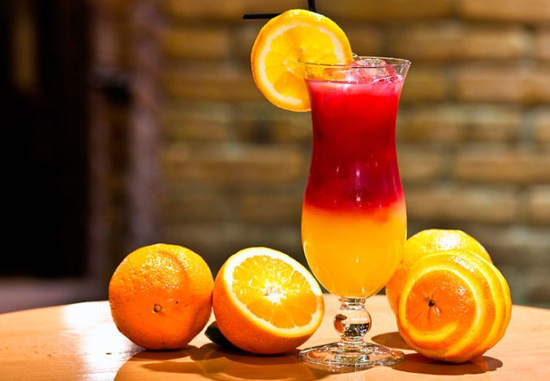
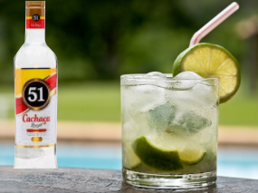
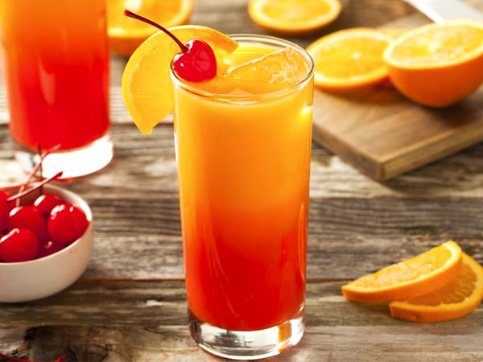
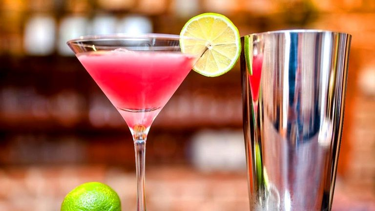
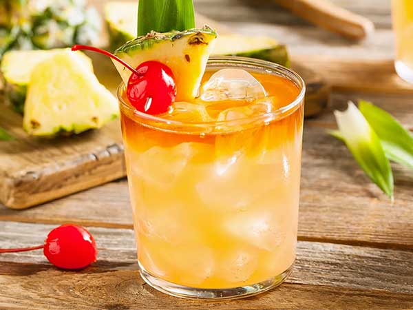
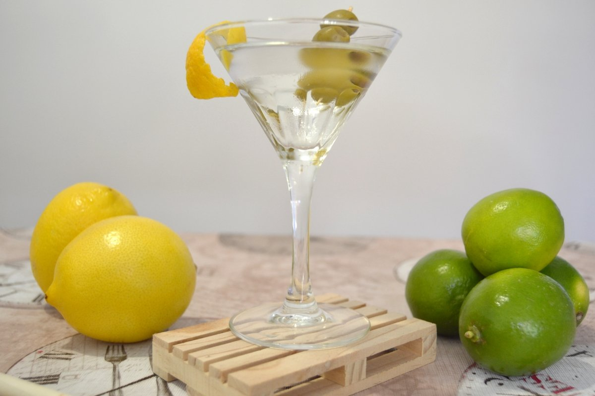
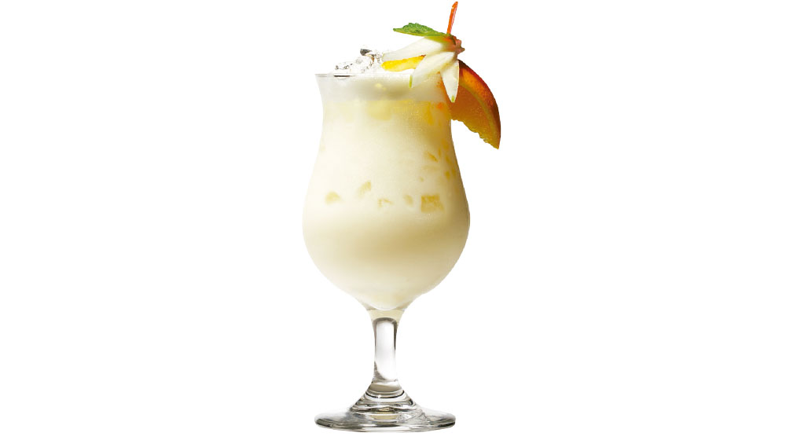
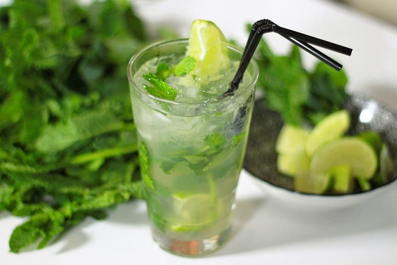
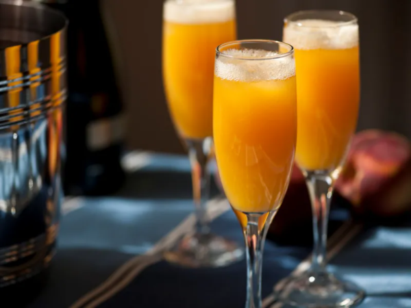
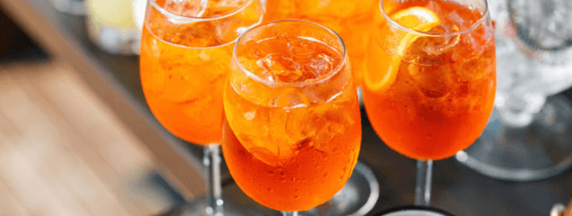

sex on the beach

Receta
- 50mlVodka
- 15mlLicor de Melocoton
- 100mlZumo de Naranja
- 15mlGrenadina
- 1.Colocar vodka, jugo de naranja y licor en una coctelera y batir.
- 2.En una Copa colocar 3 hielos y servir la mezcla.
- 3.Agregar un dash de granadina y decorar con una rodaja de naranja y una cereza en el borde.
Caipirinha

Receta
- 80mlCachaza o Cachaça
- 1pzLima o Limon
- 2cuchAzucar
- 1.Colocar pedazos de lima, azucar en vaso y aplastar con majador.
- 2.Agrega Cachaça.
- 3.Añada hielo picado y revuelva ligeramente.
Tequila Sunrise

Receta
- 80mlTequila Blanco
- 100mlzumo de naranja
- 15mlGranadina
- 1.Colocar hielo, tequila y zumo de naranja y revuelva.
- 2.Viert LENTAMENTE granadina.
- 3.Decora con naranja.
Cosmopolitan

Receta
- 50mlVodka
- 15mlTriple Sec/ Cointreau o / Grand Marnier
- 15mlGranadina
- 15mlZumo de Lima / Limon
- 1.Colocar hielo, vodka, Triple Sec, Granadina y zumo de limon en shaker.
- 2.Agita fertamente hasta que la bebida esta bien fria.
- 3.Servir en copa de martini SIN HIELO.
Mai Tai

Receta
- 60mlRon
- 15mlCuraçao Naranja / Triple Sec
- 15mlAmaretto / Orgeat
- 30mlZumo de Lima
- 8mlJarabe de Azucar
- 1.Colocar hielo, Ron, Triple Sec, Amaretto y jarabe de azucar y zumo de lima en shaker.
- 2.Agita fertamente hasta que la bebida esta bien fria.
- 3.Servir en vaso DOF con hielo, decorar con trozo de pina o lima
Dry Martini

Receta
- 75mlGinebra / Gin
- 15mlVermut blanco seco / Martini
- 1trozoCorteza de Limon
- 2pzAceitunas verdes
- 1.Colocar hielo, Gin, Vermut en shaker.
- 2.Remueve NO AGITA!
- 3.Servir en vaso de Martini, echar un trozo de corteza de limon i aceitunas
Pina Colada

Receta
- 50mlRon
- 50mlLeche de Coco
- 120mltrozoZumo de Piña
- 1.Colocar hielo picado, Ron, Leche de Coco y zumo de Piña en shaker.
- 2.Agita bien
- 3.DEcorar con trozo de Piña
Mojito

Receta
- 60mlRon
- 2cuchAzucar blanco
- 8hojasMenta
- 1pzLima
- 150mlAgua con gas
- 1.Colocar Azucar, Menta, lima en trozos, y aplastar con majador.
- 2.Añade hielo picado, ron y rellenamos con soda.
- 3.Decorar con trozo de lima.
Bellini

Receta
- 100mlProsecco
- 50mlzumo melocoton con pure
- 1.Servir en vaso de cava.
Aperol Spritz

Receta
- 100mlAperol
- 100mlProsecco
- 50mlAgua con gas
- 1pzNaranja
- 1.Rellenar copa con hielo.
- 2.Añade aperol, cava, y soda.
- 3.Añadir rodajas de naranja.
- 3.Decorar con naranja.